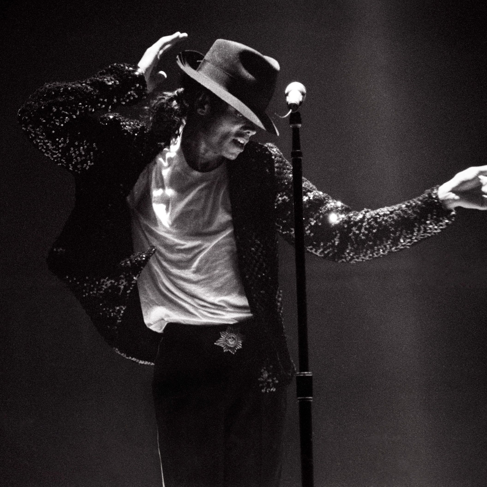

The Truly King of Pop
Micheal Jackson is the ever truly king of pop

Michael Jackson ONE ™, the immersive musical experience from The Estate of Michael Jackson and Cirque du Soleil, premiered in June 2013, taking residency exclusively at Mandalay Bay Resort and Casino. Directed by Jamie King, Michael Jackson ONE follows the success of Michael Jackson THE IMMORTAL World Tour, also produced by The Estate of Michael Jackson and Cirque du Soleil, which became the eighth top-grossing music tour of all time, according to Billboard Boxscore.
- 1970- The Jackson 5 First National Tour May 2, 1970 – December 30, 1970 (United States) The Jackson 5 embarked on their first ever tour on May 2, 1970. The brothers performed in US cities such as Daly City, Boston, Cincinnati and New York City, and broke venue attendance records along the way. One concert scheduled for Buffalo, New York had to be cancelled due to death threats being made on Michael Jackson's life. 9,000 fans were refunded as a result.
- 1971The Jackson 5 Second National Tour February 2, 1971 – October 15, 1971 (United States) circa 43 The five brothers' second US tour featured 40 performances in US cities such as Philadelphia, New York and Milwaukee. The Commodores, led by Lionel Richie, opened for the five quintet.
- 1971-1972- The Jackson 5 US Tour December 27, 1971 – October 5, 1972 (United States) circa 47 The siblings visited venues in circa 50 cities during their third tour of the United States. 1972 The Jackson 5 European Tour November 2, 1972 – November 12, 1972 (Europe) The brothers' 12-day tour of Europe had them break attendance records previously held by The Beatles. During the tour, the band performed for Queen Elizabeth The Queen Mother.
- 1973-1975- The Jackson 5 World Tour March 2, 1973 – December 1975 (Worldwide) over 160 concerts during a 3-year period The quintet's first world tour was undertaken in three years, during which the brothers visited Japan, Hawaii, the United Kingdom, South America, Hong Kong, Australia, New Zealand, the Philippines and the West Indies. 1976 The Jackson 5 Final Tour February 13, 1976 – February 19, 1976 (Philippines) 6 The last group tour as The Jackson 5, was held in Manila, Philippines, in February 1976, less than a month after their contract expires and the Motown Jackson 5 officially call themselves The Jacksons. It included six concerts.
Here is the least accomplishment of the King:
Let us dream of tomorrow where we can truly love from the soul, and know love as the ultimate truth at the heart of all creation.
-Micheal Jackson.